入院カルテ 使い方ガイド
← ガイド一覧へ 獣医師・動物看護師・トリマー向け ｜ 2026年10月31日版 ｜ 荻窪ツイン動物病院
30秒まとめ
入院中の子の
指示・バイタル・観察・点滴・投薬・食事 を、
「入院ボード」と「治療シート」の2画面 でみんなで管理するアプリです。治療シートは
8:00〜21:00 の1時間ごとの表 で、
マスを押すと右からパネルが出て、そのまま記録 できます。記録には「
誰が・何時に 」が残り、やり忘れは
赤い「未実施」 で浮き上がります。iPad の横向きで使うのがいちばん見やすいです。
橙 = 受付・看護師
青 = 獣医師
緑 = 自動（システム）
1. アプリを開く
最初にパスコード を入力します（院内で共有しているもの。分からなければ院長へ）。一度入れると同じ端末では約30日間は再入力不要です。
夜は右上の 🌓 ボタン でダークモード（黒背景）に切り替えられます。
2. 全体の流れ
2-1. 入院から退院まで
① 入院登録
VetLink で入院同意書をもらうと自動でアプリに届きます （入院ボードの上の帯に診察券番号と患者名が出るので「カルテを作成」を押すだけ）。届いていない時は「入院登録」から診察券番号で登録します。
▼
② 自動：アーミックスから取込＋既定の予定
基本情報・体重・血液検査を取り込み、体温・心拍数・呼吸数の予定（朝・昼・夕） と食事の行 が自動で入ります。疾患別セットを選んでいれば、その中身も入ります。
▼
③ 獣医師：指示を出す
治療シート左上の「＋ 追加 」から、点滴・注射・内服・処置・検査・食事の指示を足します。薬剤は名前の一部や略称で検索して選びます。用量や流量は体重から自動計算 されます。急変時の対応 （CPR希望・DNR ほか）も早めに入れます（6-4）。
▼
④ みんなで：治療シートに記録
予定のマスや空いているマスを押して、その場で記録します。
▼
⑤ 退院
見出しの「退院予定 」で日時を決めておくと、ボードとシートに出ます（予約表の「お迎え」も自動で入ります）。患者名を押して出る「患者設定」から退院の処理をします。
2-2. 画面は2つだけ
画面 何を見る・何をする 入院ボード （トップ）入院中の全員のカード。今日やること・遅れ・点滴の流量・ICU の設定がひと目で分かります。上の「患者ごと｜投薬準備 」で、全頭の投薬を時刻ごとの一覧に切り替えられます（3-2）。 治療シート （カードを押す）その子の1日の表。記録も指示の変更も、すべてこの画面の上で行います。血液検査・所見・申し送りは、右上のボタンで右から出るパネルで見ます（シートは見えたまま）。
治療シートの操作は4つだけ覚えればOKです：時刻を押す＝まとめ入力 ／マスを押す＝記録 ／項目名を押す＝指示の編集 ／左の色帯を押す＝その区分をたたむ 。
3. 入院ボードの見方
開いた瞬間に「誰が入院していて、今日何をやるか、何が遅れているか 」が分かる画面です。60秒ごとに自動更新 されます。カードは ICU → 入院 → ホテル の順に並びます（投薬のあるホテルの子は点線の枠）。
3-1. カードの見方
表示 意味 写真・名前の行 患者の写真・苗字＋名前・カルテ番号・ICU。急変時の対応 の札（DNR は赤・一部のみはオレンジ・CPR希望は青・未確認はグレー）と退院予定 の札（当日はオレンジ）もここに出ます。 種・性別・年齢・体重 体重は前日との差つき。「入院◯日目」。 赤い札・黄色の帯 診断名と特記（赤）・取り扱い注意（黄）。 今日やること その日の予定を時刻順に1行で。今の時＝「いま」、過ぎてもやっていない＝「遅れ」（赤）、済んだ＝✓。押すと、シートと同じ入力がその場で開きます 。赤が出ていたら最優先で対応 してください。 薬の行 薬の名前（略称）・1回の量（内服は「3/4錠」など）・投与経路。例「イトラコナゾール 3/4錠 po」。 今日やることに出るもの 最初は投薬（注射・内服・皮下補液）・処置・検査・ボードで足した用事・強制給餌/チューブの食事 だけ。体温などのバイタルや観察は出ません。出す・出さないは、シートの項目名を押して「ボードに出す 」で切り替えます。遅れの数も、カードに出している分だけで数えます。 点滴 12.6ml/h／CRI 薬剤名 続いている点滴。押すと内訳が出ます。「流量を確認」が付いていたら体重が変わっています（7章）。 下の札 朝の検査・留置針の部位と何日目か （交換の目安の日になるとオレンジ）・担当。 「＋ やることを追加」 その日だけの用事（検査・処置・帰る前にやること）を足せます。
上の段：日付・いま・すべて／入院／ホテルの切り替え・朝の検査の合計・今日の遅れ・今日の退院の頭数・ホテル画面へ。
3-2. 投薬準備
上の「投薬準備 」を押すと、全頭（投薬のあるホテルの子も）の今日の投薬と、強制給餌・チューブの食事を時刻ごとに1つの一覧 で見られます。今に一番近い時刻が上、過ぎた時刻は下です。
各行の左の □ を押すと、記録の画面（実際に入れた量・記録者・「実施した」）が出ます。済むと緑の ✓ になり、行の文字が薄くなります（済んだ行も消えずに残ります）。時刻を過ぎて済んでいないものは □ が赤く「遅れ」 が付きます。✓ を押すと記録した時刻・記録者・量が見え、取り消せます。
まとめて記録 ：同じ時刻に未実施が2件以上あるときは、表の下に「まとめて記録する 」が出ます。押すと未実施の行の □ がチェック欄に替わります。チェックを付けて記録者を選び、「選んだ ◯件を実施した 」で一度に記録できます。「全部選ぶ」もあります。「やめる」を押すと □ に戻ります。内服は「量」に「3/4錠」のように出ます（指示に1回の量が入っているとき）。処置は入っていません。
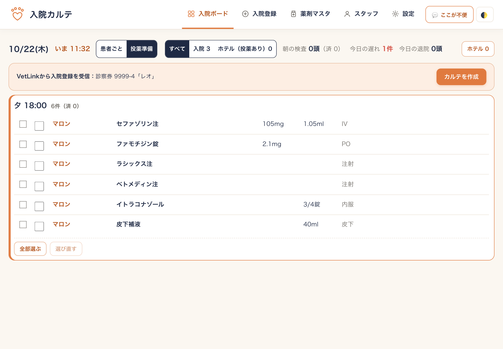
▲ 投薬準備（架空データ）。□ を押すと1つずつ記録、表の下の「まとめて記録する」で同じ時刻の薬をまとめて記録
4. 治療シートの見方看護師 獣医師
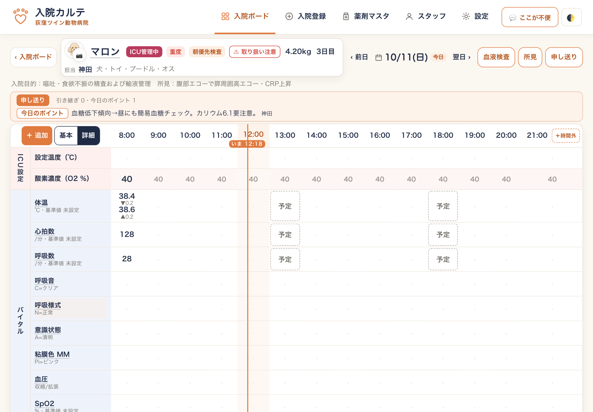
▲ 治療シート（iPad 横・架空データ）。上の1行に患者名・札・体重・日付の切り替え・血液検査/所見/申し送り
4-1. 表のつくり
横＝時刻 ：8:00〜21:00 の1時間ごとの列。記録は「時」の列に入ります（9:56 の記録は 9:00 の列。マスを押すと実際の時刻が見えます）。8:00 より前・21:00 より後は、時刻の行の右端の「＋時間外 」で列を足せます（記録の無い足した列は「×」で消せます）。縦＝区分 ：ICU設定 （ICU の子だけ）→ バイタル → 観察 → 輸液 → 投薬 → 処置 → 検査 → 食事 → 様子・メモ 。左の色帯を押すと、その区分を1行にたためます（たたんだ行に「要確認」の件数）。いまの時刻 ：見出しの時刻に短い印が付きます（表の中の縦線はありません）。バイタル は 体重 → 体温 → 心拍数 → 呼吸数 の順です。基本｜詳細 ：詳細にすると、呼吸音・呼吸様式・意識状態・粘膜色・血圧・SpO2 の行が出ます。ICU の子は最初から詳細です。観察 は最初は排尿・排便 だけです（点滴中は留置針も自動で出ます）。飲水・尿量・嘔吐・散歩・歯磨きなどは、要る子だけ「＋ 観察項目を追加」で足します。その日に中身がない区分（検査・処置など）は「＋ ◯◯を追加」の1行だけになります。
終了した指示 は、終了した日までは、ほかの指示と同じふつうの行で出ます。終了した日は項目名の下に赤字で「終了 21:17 」のように出て、その時刻より後のマスは薄くなります。次の日からは表に出ません。見出しの右の「終了した指示 ◯ 」（申し送りの左・0件のときは出ません）を押すと、入院中に終了した指示が新しい順に並びます（区分・名前・最後の量や流量・開始〜終了の日時・終了した人）。行を押すと、終了した日のシートに移ります。
前日・翌日 ：見出しの右で日付を切り替えます。夜間管理の子は「日中｜夜間」も切り替えられます（夜間＝21:00〜翌7:00）。入院目的などは1行に切り詰めています。押すと全文が出ます。
申し送りの帯（朝の検査・前日からの引き継ぎ・今日のポイント）が表の上に出ます。
退院予定の日は、その時刻の列の見出しに「退院 HH:MM」が出て、そのあとの列は薄くなります。
見出しの右の「写真 」で、この子の写真・動画を日付ごとに見られます。
iPad を縦 にしたときは、1段目が患者情報、2段目が「‹ 入院ボード」・日付・右のボタンの2段になります（ボタンは折り返して全部見えます）。
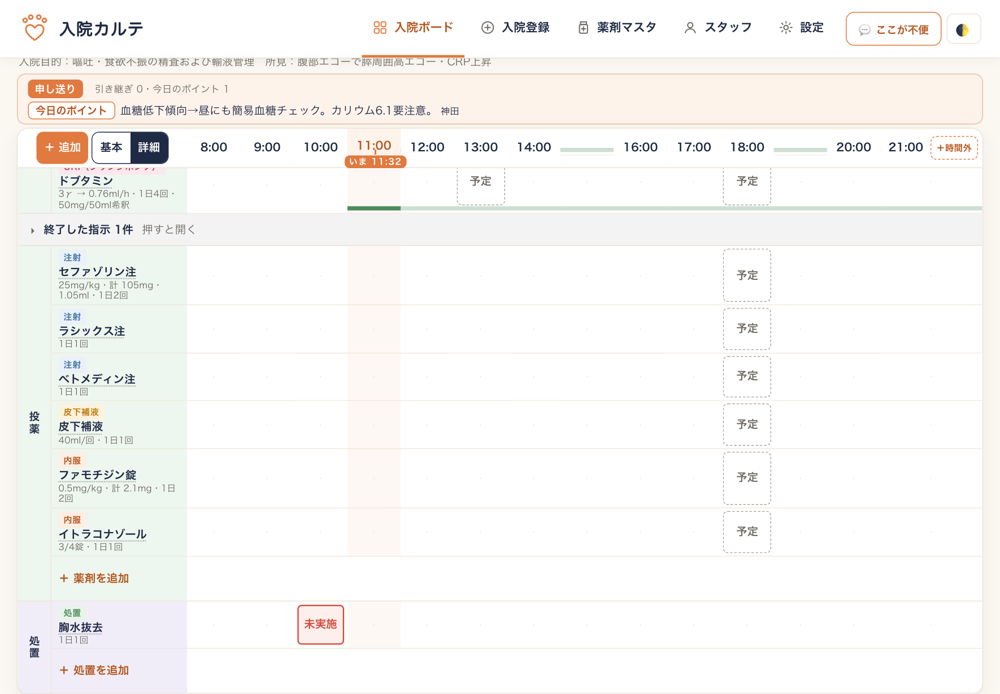
▲ 終了した日の点滴の行。項目名の下に「終了 10:17」（架空データ）
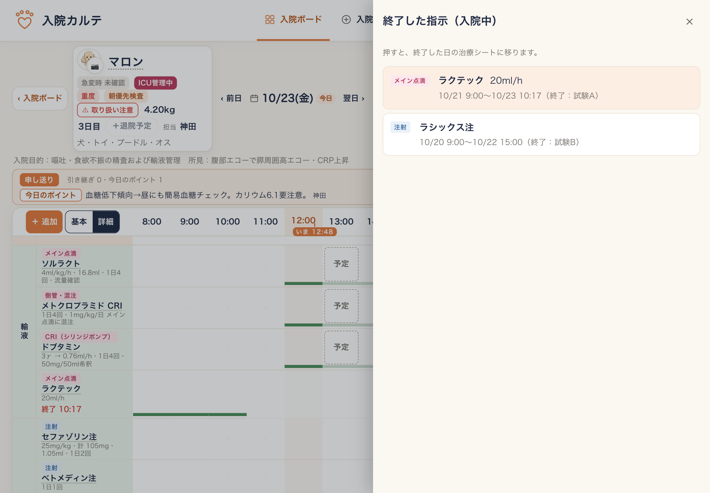
▲ 見出しの右の「終了した指示 ◯」を押したところ。行を押すと終了した日のシートへ（架空データ）
4-2. マスの見方
表示 意味 予定 これからやること。 未実施 予定時刻を60分過ぎても記録されていない＝要対応。 値（38.6 など） 記録済み。基準値の外は赤い背景に「高」、青い背景に「低」。下の小さい ▲▼ は前回との差（体重は前日との差）。 ✓ 実施済み（マスを押すと時刻と記録者が見えます）。 38.6→39.1 3回 同じ時間に2回以上記録したとき。数値は「最初→最新」、3回以上は回数。あり・なしは「○ 2回」。 カメラの印 写真・動画が付いた記録。 右上の小さなオレンジの三角 メモが入っている記録 。どの区分のマスでも同じです。マスを押すとメモの全文が見えます。1割→全量 あとから「食べた量を更新」した食事（8-2）。押すと経過が見えます。
5. 記録のしかた看護師
5-1. マスを押して記録する
マスを押すと右からパネル が出ます。上から 項目名と時刻 → 入力 → メモ → 記録者 →「記録」 の順です。「記録」ボタンはいつも一番下に見えています。
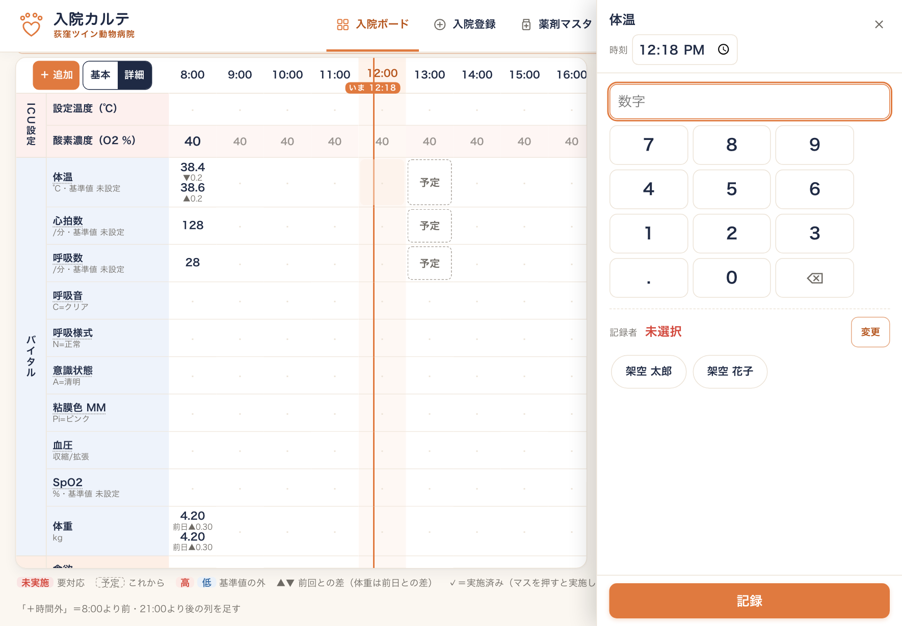
▲ 体温のマスを押したところ。数字は専用の数字ボタンで入れます（iPad のキーボードは出ません）
数字 は画面の数字ボタン（0〜9・小数点・1文字消す）で入れます。文字を書く項目（様子・メモなど）だけ iPad のキーボードを使います。選ぶ項目 （あり／なし・選択式・食べた量など）は、押して選んでから「記録」を押します（押しただけでは保存されません）。記録者 は1行で出ます。直前に選んだ人が最初から入っています。違うときだけ「変更」を押して選び直します。時刻は今の時刻が入っています。あとから入れるときは実際にやった時刻に直します。
写真・動画 ：様子・メモでは写真と動画（30秒まで）、排尿・排便などの観察の項目では写真を付けられます。その場で撮るか iPad の写真から選びます（1回5つまで）。パネルを開いたまま左のシートで別のマスを押すと、パネルの中身がそのマスに切り替わります （続けて入力できます）。押したマスには枠が付きます。
5-2. 時刻を押してまとめて入れる
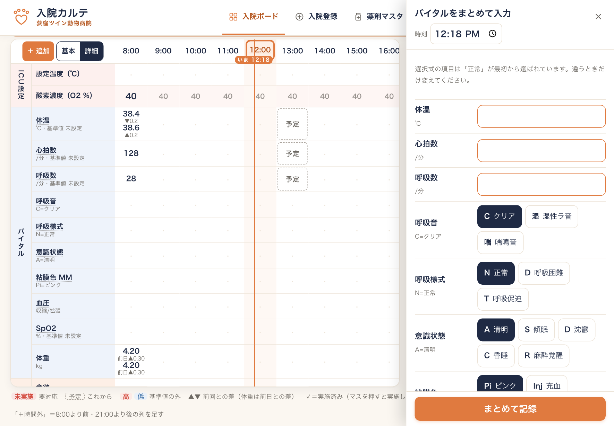
▲ 時刻（12:00 など）を押すと「まとめて入力」が開きます（画像は前の版の見た目です）
バイタル ・観察 ・投薬 に分かれていて、上のボタンで移動できます。投薬は、その時刻の薬が □ で並びます（最初は何も選ばれていません）。選んだ薬だけ、記録者と時刻を同じにして実施した記録になります。バイタルの選択式の項目は「正常」が最初から選ばれています。違うときだけ変えてください。観察は最初は空です。入れた項目だけ 記録され、その項目の予定だけ実施済みになります。
血圧は「上／下（平均）」で入れます（例 120/80（93））。
「まとめて記録」で1回の記録として保存されます。
5-3. 予定と実施（体温・心拍数・呼吸数は別々）
体温・心拍数・呼吸数は別々の予定 です。それぞれ記録して初めて実施済み になります。体温だけ記録すると、心拍数と呼吸数は「予定」「未実施」のまま残ります（測り忘れに気づけるように）。
まとめ入力では、値を入れた項目の分だけ 実施済みになります。
予定のあるマスに記録すると、その予定も一緒に実施済みになります。
5-4. 排尿・排便・尿量
排尿・排便は、性状をボタンで選びます（いくつでも）。便はスコアも選べます。正常以外は色が付きます。選択肢は設定画面で足せます。
排尿は方法 を1回ごとに選べます。尿カテ留置・カテーテル導尿 のときは尿量（ml） の欄が出て、体重と前回の尿量の記録からの時間で ml/kg/h をその場で出します。時間は手で直せます。基準より低いと「低」が付きます（基準は設定画面で獣医師が入れます。入れるまでは色は付きません）。
「尿量」の行は最初は出ません。尿量は排尿の記録で入れます（合計と ml/kg/h は項目名「排尿」を押すと見えます）。どうしても尿量だけの行が要る子は「＋ 観察項目を追加」の「尿量」で足せます。
5-5. 留置針
留置針の記録で「設置」「交換」を選ぶときは部位 （右前肢 ほか）を必ず選びます。ゲージ（22G ほか）は任意です。
まだ設置の記録がない子の「部位未入力 」のマスを押すと、最初から「設置」が選ばれ、部位とゲージの欄が出ています。
設置・交換した日を1日目として「右前・3日目 」のように数え、ボードの札にも出ます。交換の目安の日 （最初は4日目・設定画面で変えられます）になると項目名がオレンジになります。「抜去」で数えるのをやめます。
項目名を押すと「留置針の履歴」が見られます。
5-6. 直す・取り消す
記録済みのマスを押すと、記録の一覧（値・時刻・記録者）が出ます。「修正 」で入れ直し、「取り消す 」で消せます。予定のあるマスの記録を取り消すと、その予定は「予定」「未実施」に戻ります。
5-7. 同じ時刻の薬をまとめて「実施した」にする
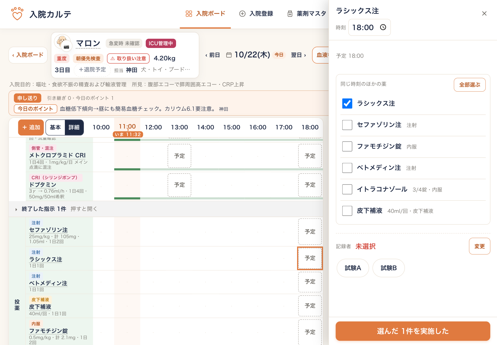
▲ 18:00 の薬のマスを押したところ（架空データ）。同じ時刻のほかの薬が □ で並びます
注射・内服・皮下補液のマスを押すと、パネルの中に「同じ時刻のほかの薬 」が並びます。押した薬は最初からチェック済みで、ほかはチェックを付けて選びます（「全部選ぶ」もあります）。
皮下補液は、それぞれの行で実際に入れた量を直せます。記録者は1人選べば全部に入ります。
ボタンは「選んだ ◯件を実施した 」です。すでに済んでいる薬は ✓（済）で出て、選べません。
時刻のまとめ入力の「投薬」、入院ボードの「投薬準備」の「まとめて記録する」でも、まとめて記録できます（5-2・3-2）。
6. 指示を足す・直す獣医師
6-1. 「＋ 追加」で指示を足す
一番上で「1つずつ追加する｜疾患別セットから入れる 」を選びます。
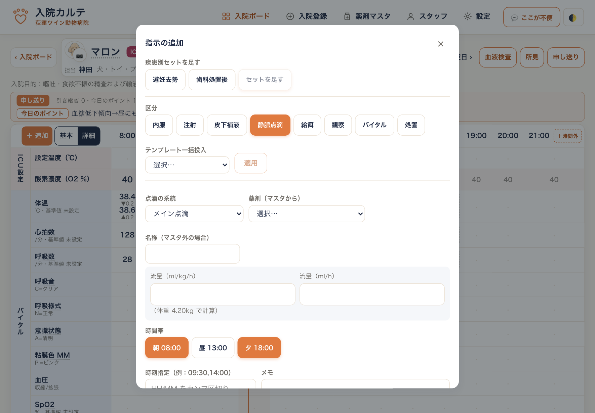
▲ 左上の「＋ 追加」。区分（内服・注射・皮下補液・静脈点滴・給餌・観察・バイタル・処置）をボタンで選びます
薬剤の欄を押すと検索して選ぶ画面 が出ます（名前の一部・略称（例 ABPC）・ひらがなでも可）。検索欄が空のときは、この子で最近使った薬剤 → 院内でよく使う薬剤 → すべての順に出ます。最初は選んだ区分の薬剤だけ出ます（「すべて表示」で全部）。マスタに無いものは「マスタ外の名前で入れる」。
薬を選ぶと、下に薬用量の欄 が出ます。VetLink の量（優先）と、共通薬剤マスタで獣医師が承認した量が並びます。「○ を使う」 を押すと用量の欄に入り、体重から投与量を自動計算 します。用量の欄は最初は空です（前の薬の量は入りません）。
承認済みの量の範囲より多い・少ないときは警告が出ます。共通薬剤マスタにその薬の量が無いときは「量は計算しません」と出ます。足すときは上のメニュー「薬剤マスタ」から（10-2）。KCL などの危険薬は赤い安全警告が出ます。
内服 は「1回の量 」（1/4・1/2・3/4・1・1と1/2・2 のボタンか文字で。単位は錠・カプセル・包・ml）を入れられます。投薬準備・シートの項目名の下・入院ボードのカード・疾患別セットに出ます。1/3 のようにボタンに無い分数も、入れたとおりの文字で出ます（2026年10月30日より前に入れた指示は、数から直した表示のままです）。処置 は、候補のボタン（胸水抜去・包帯・ガーゼ交換・創部の消毒 ほか）から選ぶか文字で入れます。「◯時間ごと」を入れると 8:00〜21:00 の時刻が入ります。処置は治療シートの「処置 」の区分に出ます（投薬の下・検査の上）。区分の中の「＋ 処置を追加」からも足せます。マスでは実施・記録者・メモ・写真 を入れられます。時間帯（朝 8:00・昼 13:00・夕 18:00）か時刻を選びます。「この日だけ」で1日だけの予定にもできます。
バイタル は、予定にする項目（体温・心拍数・呼吸数）を選びます。同じ項目の予定がすでにあれば、そこに時間帯が足されます。給餌 は時間帯だけを決めます（フードと量は8章）。疾患別セット （避妊去勢・歯科処置後ほか）を選ぶと、中身の短い説明が出ます。オレンジの「『○○』を入れる」で、観察・食事・朝の検査・投薬をまとめて足せます。入れてから30分以内なら「取り消す」で戻せます（入った予定に記録が無いときだけ）。セットから入った投薬・輸液・処置は「確認待ち 」で入ります。項目名を押して内容を確かめ、「確定する」を押すと予定が出ます。用量や流量を直してから「確定する」を押すと、直した内容で確定します。指示を出した時刻より60分以上前の今日の予定は作りません（昼に足した指示の朝の分が「未実施」にならないように）。
6-2. 項目名を押して直す・終える
行の項目名（薬剤名・体温など）を押すと、右のパネルで名称・用量・予定の時間帯・メモを直せます。
「この項目を終了 」で、今日から先の未実施の予定が消えます（実施済みの記録は残ります）。終了するときは、記録者を選んでから「終了する 」を押します。終了した日のシートでは項目名の下に「終了 ◯:◯◯」が出て、次の日からは見出しの右の「終了した指示 ◯」で見ます（4-1）。
観察項目は「＋ 観察項目を追加」で候補（飲水・尿量・嘔吐・散歩・歯磨き・疼痛 ほか）から足すか、名前を入れて足せます。項目名から「表示しない」にしても記録は残り、「↩」で戻せます。
項目名のパネルの「ボードに出す 」で、入院ボードのカードの「今日やること」に出す・出さないを切り替えます（3-1）。
6-3. 検査の予定
検査は「検査」の区分の1本の行に出ます。「＋ 追加」の区分「検査」・申し送りの「明日の朝の検査」・ボードの「＋ やることを追加」から入れます。
同じ日・同じ時刻に入れると、前の検査に足されます （済んだ検査には足さず、別の予定になります）。やめるときは1つずつ やめられます。
6-4. 急変時の対応
患者名を押して出る患者設定 の「急変時の対応」で選びます：CPR希望 （心肺蘇生まですべて行う）／一部のみ （例：薬は使うが挿管・心臓マッサージはしない。中身はメモに）／DNR （心肺蘇生を行わない）。
確認した方法（対面・電話・その他）を入れて「急変時の対応を保存」。変えた履歴も残ります。名前の行の札を押すと、決めた日・獣医師・メモが見えます。
新しいカルテは「未確認」で始まります。VetLink の入院同意書にはこれを選ぶ項目が無いので、ここで入れてください。
7. 輸液・点滴獣医師 看護師
点滴は系統（メイン点滴／側管・混注／CRI（シリンジポンプ） ）と皮下補液で、入れる値が違います。数字の横には必ず単位が出ます。
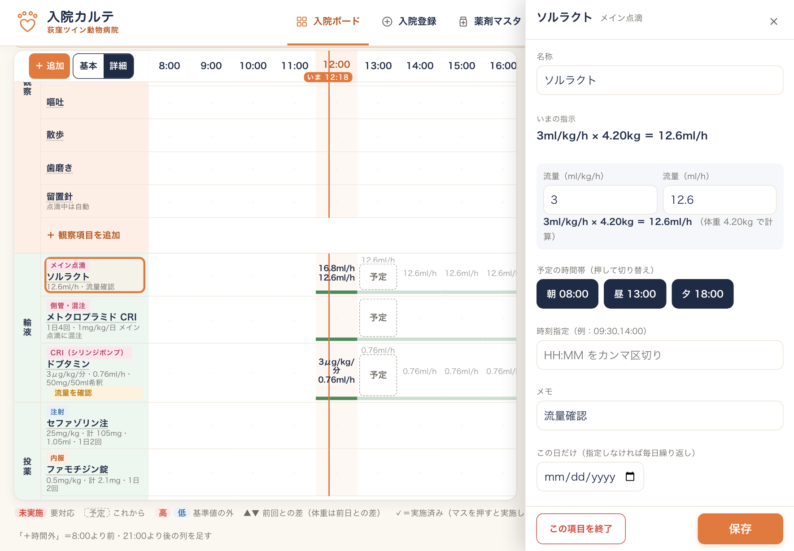
▲ メイン点滴の項目名を押したところ。「いまの指示」に計算の内訳が出ます
系統 入れる値 シートの表示 メイン点滴 流量（ml/kg/h）か流量（ml/h）。どちらかを入れると、もう片方を体重から計算します。 項目名の横に「12.6ml/h」。押すと「3ml/kg/h × 4.20kg ＝ 12.6ml/h」 CRI（シリンジポンプ） 薬剤・用量と単位（mg/kg/h・μg/kg/h・μg/kg/分。設定画面で足せます）・希釈後の濃度（mg/ml・μg/ml）。流量（ml/h）は自動で計算。流量を入れて用量を計算することもできます。 用量と流量の両方（例「3μg/kg/分・0.76ml/h」） 皮下補液 1回の量（ml）か体重あたり（ml/kg）。 「60ml/回」。実施の記録で実際に入れた量 を直せ、指示と違うとマスの2行目に出ます 側管・混注 用量（mg/kg）・濃度（mg/ml）＝今までどおり。 用量と液量
7-1. 流量を変えたとき
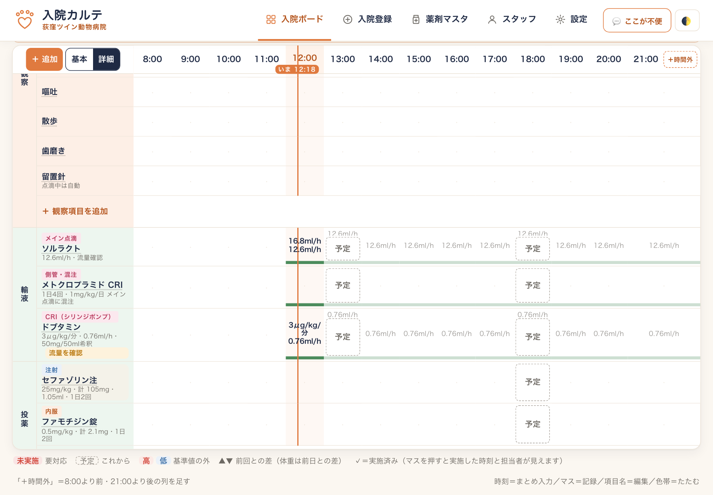
▲ 流量を変えた時刻のマスに新しい流量が太字で出て、次に変えるまで帯の中に薄く同じ値が続きます
項目名を押して流量（CRI は用量）を変えると、「流量を変えた時刻 」と記録者 の欄が出ます。記録者を選ばないと保存できません。前の変更より前の時刻にはできません。
太字のマスを押すと、変更前の流量・変えた人・時刻 が見えます。
体重が変わっても ml/h は自動で変えません （ポンプに設定している値のため）。項目名の横に「流量を確認 」が出ます。項目名を押すと、今の体重での ml/kg/h が見えます。ポンプはそのままでよいときは「この ml/h のまま今の体重にそろえる」で印が消えます。流量の変更の記録は消せません。間違えたときは、もう一度流量を変えて直します。
流量を変えるときに「＋ 追加」で同じ点滴をもう一度入れると、止まって案内が出ます（行が2本に分かれないように）。流量は項目名から直します。 薬剤そのものを替えるとき（例 ソルラクト → ラクテック）は、今の点滴を終了してから新しく足します。
8. 食事看護師
食事の区分は「食事 」1行と「摂取カロリー 」1行だけです。フードごとに行は増えません。中身は1回ごとにマスで選びます 。
8-1. 項目名「食事」で決めておくこと
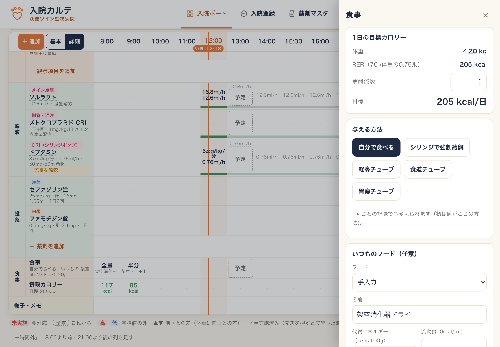
▲ 1日の目標カロリー・与える方法・いつものフード・予定の時間帯・今日食べたもの
1日の目標カロリー ＝RER（70×体重の0.75乗）×病態係数。病態係数はここで直せます。与える方法 ：自力採食／強制給餌（シリンジ・口に入れる）／経鼻・食道・胃瘻チューブ。いつものフード （任意）：フードは検索して選びます（名前の一部・メーカー・種類。犬猫の絞り込みつき）。1回の量は、目標カロリー÷代謝エネルギー÷回数で自動で出ます （「自動」の印）。手で直すとその値が残り、自動の計算の値が小さく並びます。空にして保存すると自動に戻ります。チューブのときは ml で持ちます。予定の時間帯（「＋ 時刻を追加」で時刻も足せます）・食事の予定の終了・今日食べたもの （時刻・フード・量・kcal）もここで見られます。
8-2. マスで1回分を記録する
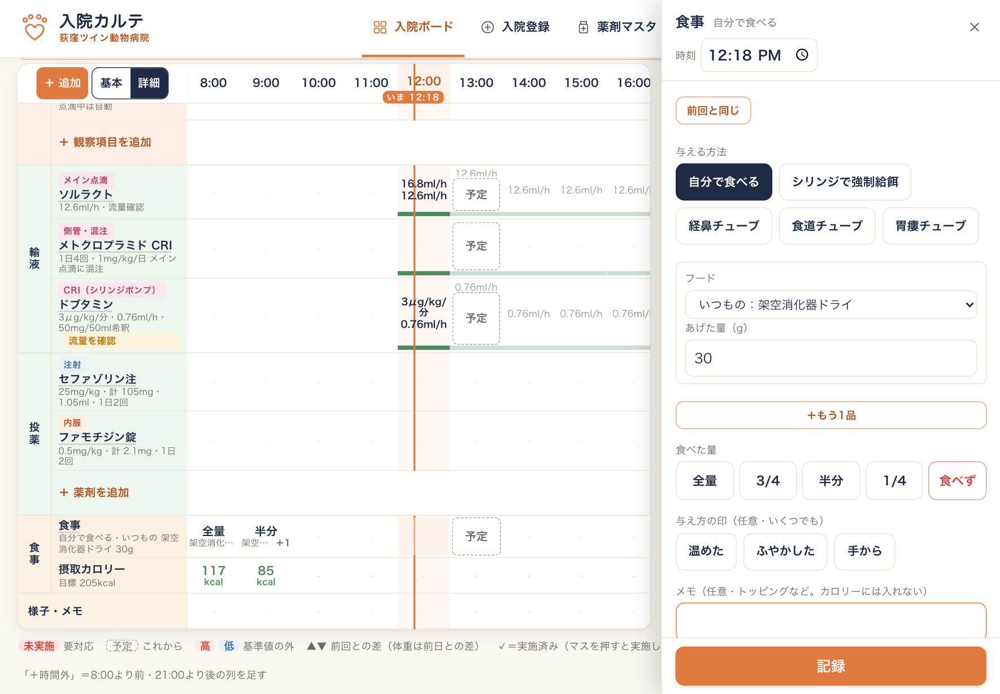
▲ 食事のマスを押したところ（自分で食べる）
フード ：初期値は「いつものフード」。この患者で最近使ったフード・フードマスタ・手入力からも選べます。あげた量（g） も直せます。「＋もう1品 」で2種類以上を記録できます。2品以上のときは出し方 （混ぜて＝食べた量は全体で1つ／別皿＝フードごとに食べた量）を選びます。
食べた量 （0割〜10割の11段階。10割＝全量・0割＝食べず）・与え方の印 （温めた／ふやかした／手から・いくつでも）・メモ （カロリーに入れない）。あとから食べたとき （例 8:00 に1割→12:00 に見たら完食）は、記録済みのマスを押して「食べた量を更新 」を押し、今の割合・時刻・記録者を選んで保存します。前の割合は残り、マスは「1割→全量」、押すと「8:00 1割（永野）→ 12:05 全量（◯◯）」のように経過が見えます。摂取カロリーは新しい割合で計算し直します。「修正」は入れ間違いを直すときに使います。記録済みの食事のマスでは、新しい記録の入力欄は最初たたまれています。同じ時間にもう1回あげたときだけ「＋ この時間にもう1回あげた 」を押します。
「前回と同じ 」で前回のフード・量・出し方・与え方の印・与える方法が入ります（食べた量とメモは入りません）。
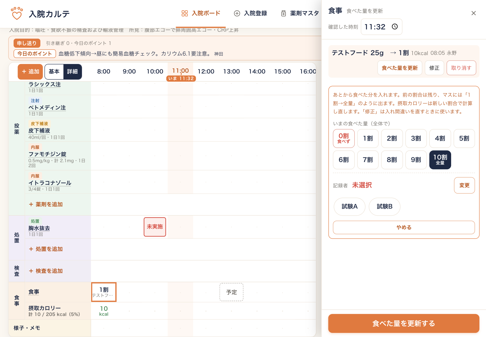
▲ 記録済みの食事のマスで「食べた量を更新」を押したところ（架空データ）
チューブ のときは、フード（流動食）・入れた量（ml）・前後に流した水（ml・任意）を入れます。シリンジで強制給餌 のときは入れた量（ml か g）。どちらも食べた量は出ません。
マスの表示 意味 1行目 食べた量（チューブ・強制給餌は入れた量）。別皿で食べた量が違うときは少ないほう。 2行目 フード名。2種類以上は「＋1」のように数が付きます（押すと全部見えます）。 kcal不明 代謝エネルギーが分からないフードがあった回。そのフードは摂取カロリーの合計に入りません。
摂取カロリーは、回ごとに「代謝エネルギー × あげた量 × 食べた割合」で積み上げます。流動食は kcal/ml で計算します（フードマスタに kcal/ml を登録）。「摂取カロリー」の項目名の下にその日の合計／目標（%） が出て、目標の50%未満は赤・80%未満はオレンジ・それ以上は緑になります（境目は設定画面で変えられます）。
9. 血液検査・所見・申し送り獣医師
治療シートの見出しの右のボタンで、右からパネルが出ます（シートは見えたまま）。
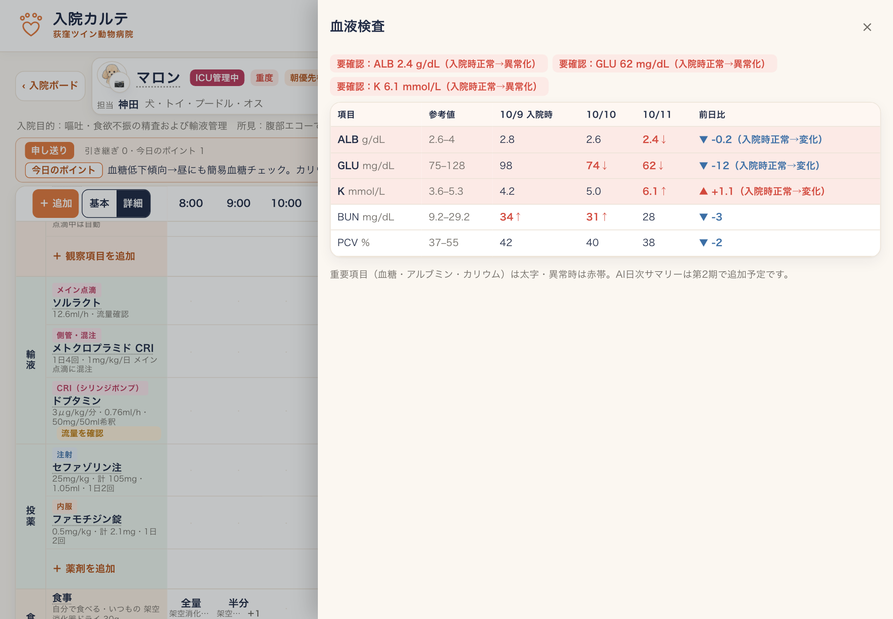
▲ 血液検査（架空データ）。CBC・生化学・電解質・その他に分かれ、略語で並びます
血液検査 ：アーミックスから取り込んだ検査を日ごとに並べます。CBC → 生化学 → 電解質 → その他 の区切りで、決まった順番に略語 （WBC・HGB・BUN・ALT など）で出ます。日本語の名前は略語の下に小さく出ます。その日に測っていない項目は出ません。GLU・ALB・K は太字、基準の外は赤、前日からの増減は ▲▼。略語と区切りの対応は設定画面で直せます（対応のない名前は「その他」に来た名前のまま出ます）。所見 ：主観・レントゲン・エコーの所見を書きます。申し送り ：明日の朝の検査（ボタンで選ぶ・「前日と同様」も可）・明日への引き継ぎ・今日のポイント。シートの上の帯と入院ボードに出ます。
10. 入院登録・薬剤マスタ・設定獣医師
10-1. 入院登録
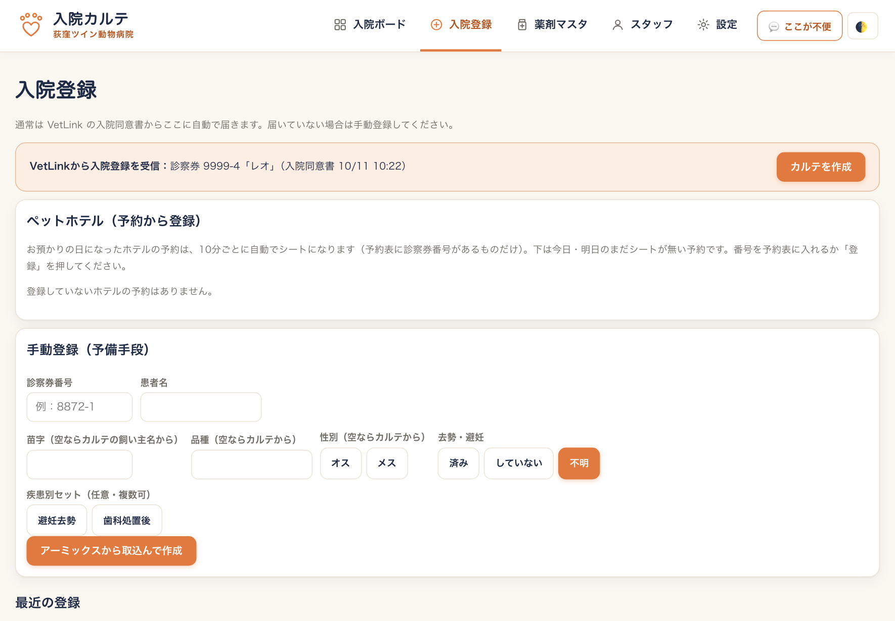
▲ 入院登録（架空データ）
VetLink で入院同意書をもらった子は、入院ボードの上の帯に出ます。「カルテを作成」を押すだけです。
届いていない時は診察券番号を入れて登録します。苗字・品種・性別・去勢避妊・疾患別セットも選べます（選んだセットの中身が下に出ます）。
入院開始日 を選べます。空のままなら今の日時になります。前の日から入院している子を後から登録するときは、その日付を選びます。登録すると体温・心拍数・呼吸数の予定（朝・昼・夕） が自動で入ります。
患者名を押すと患者設定 （重症度・ICU・夜間管理・面会/連絡・飼い主特記・この患者だけの基準値・アーミックス再取込・退院）が開きます。
入院開始日を間違えたときは、患者設定の「入院開始日 」で日付を直して保存します。時刻は元のままです。「入院◯日目」の数え方も変わります（ホテルは泊数も変わります）。
10-2. 薬剤マスタ
上のメニュー「薬剤マスタ」を押すと開きます。上に2つのタブがあります。
薬の量（共通薬剤マスタ） ：電子カルテ・入院カルテ・在庫アプリで共通の薬の量の一覧です。計算に使うのは獣医師が「承認」した行だけ です。「用量のチェック（未承認 ○）」のタブで、出典と照らし合わせて承認します（「院内で使っている薬だけ」のチェックを外すと全部出ます）。量の行を「直す」で保存すると、前の版は残り、直した行は「下書き」 になります（保存はそこで済んでいます）。下書きは承認するまで計算に使わないので、画面の上で獣医師を選び、その行の「承認」 を押してください。承認していない行には「承認すると計算に使われます」と出ます。院内の薬の設定 ：指示を作るときに選ぶ薬の一覧です。濃度・区分・1日回数・ボードの略称・危険薬の注意をここで決めます。量はここでは決めません。
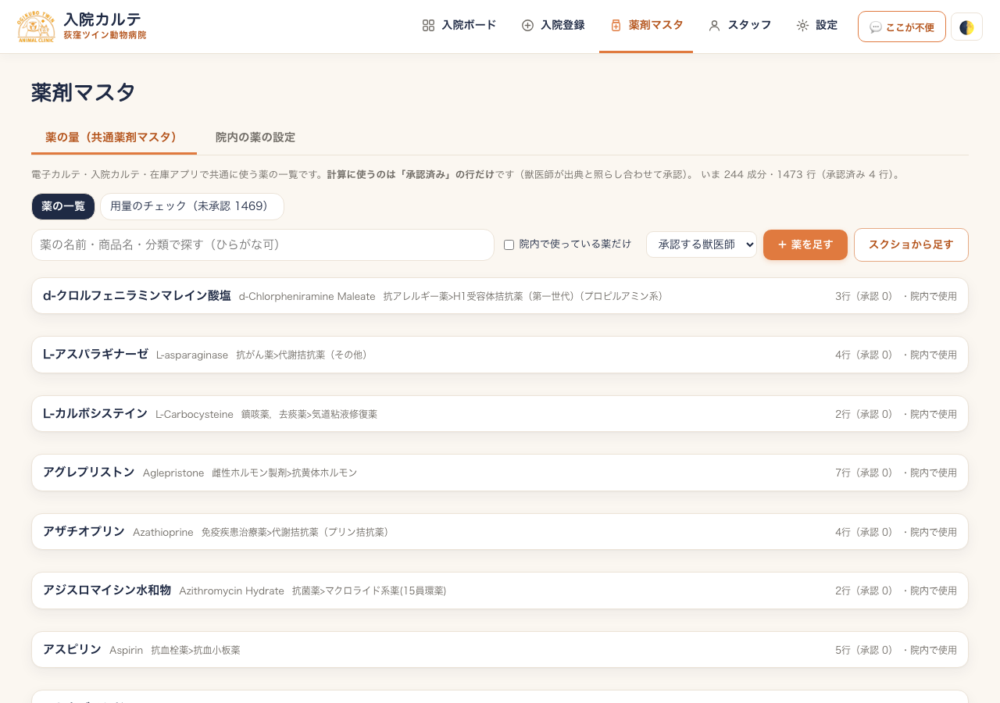
▲ 薬の量（共通薬剤マスタ）。「用量のチェック」で承認します
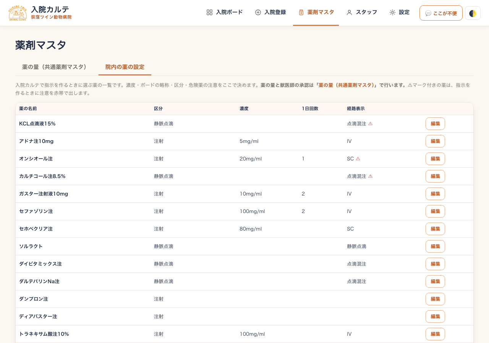
▲ 院内の薬の設定。薬の名前・区分・濃度・1日回数・経路表示
10-3. 設定画面（上のメニュー「設定」）
バイタルの基準値（猫・小型犬・大型犬）・選択式のバイタルの選択肢・朝の検査のボタン。
CRI の用量の単位・食事の与える方法・与え方の印（足せます）。
フードマスタ（kcal/100g・流動食の kcal/ml・CSV 取込）・疾患別セット。
血液検査の項目名 （電子カルテの名前 → 略語・区切り・並び）・処置の候補 （足す・名前を直す・使わない）。排尿・排便の選択肢・留置針の部位と交換の目安の日・尿量の「低」の基準（ml/kg/h）・摂取カロリーの色の境目・急変時の対応の選択肢の名前。
11. ペットホテルの子トリマー・看護師
ペットホテルの子も入院カルテで管理します。ボード上の「すべて／入院／ホテル」で切り替えられます。
11-1. 登録
予約表のホテルの予約（診察券番号の入ったもの）は、10分ごとに自動で登録 されます。手で入れるときは入院登録の「ペットホテル（予約から登録）」から選びます。
飼い主さんがLINEで書いた事前記入（ごはん・お薬・アレルギー・お散歩・緊急連絡先）は、患者名のパネルのホテル台帳 に自動で入ります。届いていなければ 「LINEの事前記入を取り込む 」。
右の「カルテから ⚠ 」に、ワクチン・ノミダニ予防の期限・アレルギー・誤食・注意の印のうち、獣医師に確かめてほしいことが出ます。
11-2. お預かりのとき
ホテル台帳の「お預かりのとき（スタッフ）」に、誤食の有無・持ち物の確認・お預かりの担当者・前払い／後払いを入れて 「台帳を保存 」。
11-3. お預かり中の記録
シートの行はお散歩・おしっこ・うんち・体調・食欲・トリミング とごはん・お薬・サプリ です。マスを押して記録します（5章と同じ操作）。
体調の選択肢は3つです（2026年10月30日〜） ：◎ とっても元気／○ 元気／△ ちょっと元気がない・緊張。前の「ふつう」は○、「気になる」は△として読みます。体調では「獣医師に確認」の印は出ません。食欲「食べない」 のときだけ赤い印が出ます。
この記録がそのまま飼い主さんへのホテルレポート の表になります。記録が無い日は「ー」になるので、紙ではなく入院カルテにつけてください。
11-4. 写真
右の「写真」で撮った写真は、その場で飼い主さんのマイページのアルバムに出ます。ほかの子や人が写っていないか確かめてから撮ってください。
11-5. ホテルレポートを送る（お迎えのとき・2026年10月30日〜）
右の「ホテルレポート 」を開きます。お預かり日〜お迎え日の表に、記録から印が自動で入っています。
項目 印の決まり ごはん その日に食べた割合の平均：◎ 完食／○ 6割以上／△ 6割未満（別皿は少ないほう） おしっこ・うんち その日に「あり」が1つでもあれば ○ ／「なし」だけなら × 元気 体調の記録。1日に2つ以上あれば低いほう 記録なし ー
印は押すと ◎○△ー（おしっこ・うんちは ○×ー）に直せます。手で直した印は、あとで記録が増えても残ります。
総評 （期間のひとこと・400字まで）を書き、書いた人を選んで 「マイページに送る 」。送ると「送信済み（日時）」と出ます。直して送り直すこともできます（上書き）。飼い主さんへのLINEのお知らせは1つの予約につき1回 です。
予約とつながっていない子（予約から登録していない子）は送れません。前に送った内容が読めないときは、読み直すまで送れません。
11-6. お会計
右の「会計 」で 「台帳から明細を作る 」。宿泊（サイズ別・繁忙期）・お散歩・はみがき・個室の案が料金表から入ります。
足りないものは「料金表から選ぶ」か 「＋ 足す 」。値引き（ポイントの特典）・支払い方法を入れます。
お迎えが19時を過ぎたら 、どんな理由でも「19時以降のお迎え（預かり上限）」の行が必ず入ります（消せません）。実際のお迎えが遅れたときは、台帳の「お迎え」の時刻を直してから明細を作り直します。
受け取ったら 「済（受け取った） 」、まだなら「未収」。
12. 「ここが不便」を送る
右上の「💬 ここが不便 」から、使いにくいところ・こうしてほしいことを送れます。今見ている画面の情報が自動で付くので、短い一言で大丈夫です。たいてい数日で直ります。
13. よくある質問・困ったとき
質問 答え 夜中や早朝も使えますか？ 使えます。 記録・閲覧は24時間動きます。アーミックスからの取込（登録・再取込）だけは受付PCが動いている日中のみです。患者のアイコン（顔の画像）はどこから出ますか？ 次の順で、ある物を出します：①入院カルテ・自作カルテで撮った写真 ②飼い主さんがマイページで登録した顔写真 ③アーミックスで「この子の写真」に選ばれている写真 ④品種のイラスト ⑤犬・猫の絵 。患者画面のアイコンを押すと、iPhone・iPad でその場で撮った写真に差し替えられます（「この写真にする」で保存）。 「記録」を押しても保存できない パネルの下に赤い文字で理由が出ます。多いのは記録者が未選択 です。 体温だけ測ったのに心拍数が「未実施」になる 正常です。体温・心拍数・呼吸数は別々の予定で、それぞれ記録して初めて実施済みになります。 点滴に「流量を確認」が出た 計算した時から体重が変わっています。項目名を押して今の体重での ml/kg/h を確かめてください（7章）。 食事のマスに「kcal不明」が出た そのフードの代謝エネルギーが分かりません。フードマスタに登録するか、手入力で kcal/100g（流動食は kcal/ml）を入れてください。 昼に足した指示の朝の分が出ない 指示を出した時刻より60分以上前の今日の予定は作らない決まりです（やり忘れではないのに「未実施」にしないため）。 ボードに体温・観察の予定が出ない 最初は投薬・処置・検査・強制給餌/チューブの食事だけ出します。出したい項目は、シートの項目名を押して「ボードに出す」にしてください。 点滴の流量を変えたら行が2本になった 流量は項目名を押して直します（行は1本のまま、変えた時刻のマスに新しい流量が太字で出ます）。「＋ 追加」で同じ点滴を入れると止まります。 終了した薬がシートから消えた 終了した次の日からは表に出ません。見出しの右の「終了した指示 ◯」を押すと一覧が出て、行を押すと終了した日のシートに移ります。 尿量の行がない 最初は出しません。尿カテ留置・カテーテル導尿のときは排尿の記録で尿量を入れます。行が要る子は「＋ 観察項目を追加」で「尿量」を足してください。 撮った動画はずっと残りますか？ 写真は残り続けます。動画は退院から90日たつと院内の NAS へ移します （アプリからは見えなくなります）。 表示がおかしい・動かない まず再読み込み。直らなければ院長へ。
⚠ 患者情報の取り扱い： この画面には患者名・飼い主さんの情報が表示されます。院外で画面を開いたまま席を離れない・画面の写真をSNS等に載せない でください。（このガイドの画像はすべて架空のサンプルです）
荻窪ツイン動物病院 ｜ 入院カルテ 使い方ガイド（2026年10月31日版）